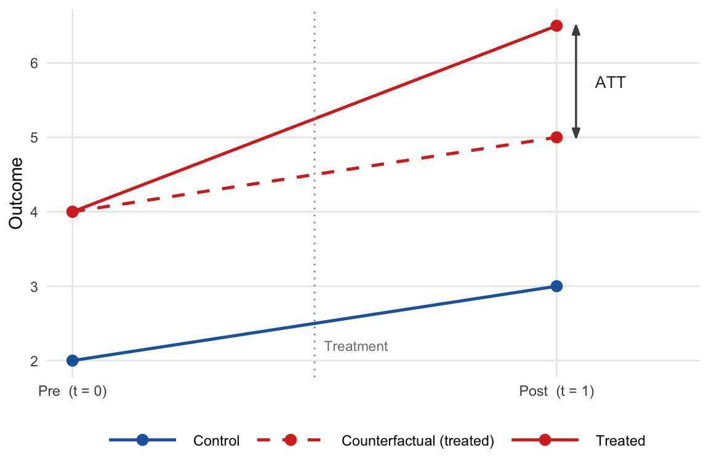

Causal inference is the central challenge of empirical social science. Observational data reveal associations, but policy questions require counterfactual answers: what would have happened to a treated unit had it not been treated? This chapter builds the methodological foundations for one of the most widely used strategies for answering such questions — difference-in-differences (DiD). We begin with the classical linear regression model, establish its limits when confounders are unobserved, and then develop DiD as a solution that leverages panel variation. We formalise identification via the potential outcomes framework, state the key assumptions precisely, and close by extending the \(2\times 2\) setup to the two-way fixed effects (TWFE) panel regression.
1.1 Linear Regression: A Review
1.1.1 The Classical Linear Model
Let \(\{(Y_i, \mathbf{X}_i)\}_{i=1}^n\) be a random sample where \(Y_i\) is the scalar outcome and \(\mathbf{X}_i\) is a \(1\times K\) vector of regressors (including a constant). The classical linear model specifies
\[Y_i = \mathbf{X}_i\boldsymbol{\beta} + \varepsilon_i,
\qquad i = 1,\ldots,n, \tag{1.1}\]
where \(\boldsymbol{\beta}\) is a \(K\times 1\) parameter vector and \(\varepsilon_i\) is an unobserved disturbance. The Gauss–Markov conditions require:
Condition
GM1
Linearity in parameters
GM2
Random sampling
GM3
No perfect multicollinearity: \(\text{rank}(\mathbf{X}) = K\)
Under GM1–GM5, OLS is the best linear unbiased estimator (BLUE) by the Gauss–Markov theorem (Angrist & Pischke, 2009, Ch. 3).
1.1.2 The OLS Estimator
In matrix notation let \(\mathbf{Y} = (Y_1,\ldots,Y_n)'\) and \(\mathbf{X}\) be the \(n\times K\) design matrix. OLS minimises the residual sum of squares:
When GM5 fails (heteroskedasticity), the conventional variance estimator is inconsistent. The heteroskedasticity-consistent (HC) sandwich estimator replaces \(\hat\sigma^2(\mathbf{X}'\mathbf{X})^{-1}\) with
where \(\delta_{WX}\) is the coefficient from regressing \(W_i\) on \(X_i\). If \(\beta_W \neq 0\) and \(\delta_{WX} \neq 0\), the short-regression estimator is inconsistent. DiD addresses this by differencing out time-invariant omitted variables — a strategy that does not require observing or measuring them.
R: OLS with lm()
library(tidyverse)library(modelsummary)set.seed(42)n <-500df_ols <-tibble(x =rnorm(n),w =0.5* x +rnorm(n), # correlated confoundery =2+0.8* x +1.5* w +rnorm(n))fit_short <-lm(y ~ x, data = df_ols) # omits w → biasedfit_long <-lm(y ~ x + w, data = df_ols) # controls for w → consistentmodelsummary(list("Short (biased)"= fit_short,"Long (consistent)"= fit_long),stars =TRUE,gof_omit ="IC|Log|F")
Short (biased)
Long (consistent)
+ p < 0.1, * p < 0.05, ** p < 0.01, *** p < 0.001
(Intercept)
1.927***
1.960***
(0.082)
(0.043)
x
1.577***
0.840***
(0.084)
(0.049)
w
1.501***
(0.042)
Num.Obs.
500
500
R2
0.413
0.836
R2 Adj.
0.412
0.835
RMSE
1.82
0.97
The short regression overstates \(\hat\beta_1\) because \(W_i\) is positively associated with both \(X_i\) and \(Y_i\); the long regression recovers the true coefficient \(\beta_1 = 0.8\).
1.2 DiD: Historical Origins and the 2×2 Design
1.2.1 Historical Background
The logic of comparing outcome changes across groups predates its formal econometric treatment. An early celebrated instance is John Snow’s 1854 analysis of cholera mortality in London, where he contrasted changes in death rates across water-supply districts. The modern econometric use of DiD is often traced to Ashenfelter & Card (1985), who compared earnings growth for workers enrolled in job-training programmes against those who were not, exploiting the longitudinal structure of earnings. The estimator gained broad recognition through Card & Krueger (1994), who compared fast-food employment in New Jersey — where the minimum wage rose in April 1992 — against neighbouring Pennsylvania, and found no adverse employment effect. Since then, DiD has become one of the most widely used quasi-experimental strategies in applied economics (Angrist & Pischke, 2009, Ch. 5).
1.2.2 The 2×2 Setup
The canonical design involves:
Two groups: treated (\(D_i = 1\)) and control (\(D_i = 0\)).
Two periods: pre-treatment (\(t = 0\)) and post-treatment (\(t = 1\)).
Let \(\bar Y_{d,t}\) denote the group-period sample mean. The four cells are:
Pre (\(t=0\))
Post (\(t=1\))
Change
Control (\(D=0\))
\(\bar Y_{0,0}\)
\(\bar Y_{0,1}\)
\(\Delta_0 = \bar Y_{0,1} - \bar Y_{0,0}\)
Treated (\(D=1\))
\(\bar Y_{1,0}\)
\(\bar Y_{1,1}\)
\(\Delta_1 = \bar Y_{1,1} - \bar Y_{1,0}\)
The DiD estimator subtracts the control group’s change — which estimates the counterfactual trend — from the treated group’s change:
Figure 1.1 depicts the geometry of the estimator. The dashed line is the counterfactual — the trend the treated group would have followed absent treatment, inferred from the control group’s trajectory. The ATT is the vertical gap between the observed treated outcome and the counterfactual at \(t = 1\).

Figure 1.1: DiD estimator geometry. The dashed line is the counterfactual trend for the treated group, extrapolated from the control group’s slope. The ATT is the vertical gap at \(t = 1\).
1.2.3 Regression Representation
\(\hat\delta^{\text{DiD}}\) is algebraically identical to the OLS estimator of \(\delta\) in the interaction regression
\(\alpha\) = control group mean in the pre period,
\(\beta\) = baseline difference between groups,
\(\gamma\) = common time trend,
\(\delta\) = DiD treatment effect estimate.
This regression form is convenient because it integrates directly into the standard inference machinery (HC/cluster standard errors, covariate adjustment) and extends naturally to multi-period settings.
R: Implementing the 2×2 DiD
library(tidyverse)library(modelsummary)set.seed(123)n <-200# observations per groupdf_did <-tibble(unit =rep(1:(2* n), each =2),treated =rep(c(rep(0, n), rep(1, n)), each =2),post =rep(c(0L, 1L), 2* n)) |>mutate(D = treated * post,y =5+# intercept (control, pre)2* treated +# pre-period group difference1.5* post +# common time trend3* D +# true ATT = 3rnorm(4* n) )# ── 2×2 table of means ──────────────────────────────────────────────────────means <- df_did |>group_by(treated, post) |>summarise(y_bar =mean(y), .groups ="drop")did_manual <-with(means, (y_bar[treated ==1& post ==1] - y_bar[treated ==1& post ==0]) - (y_bar[treated ==0& post ==1] - y_bar[treated ==0& post ==0]))cat("Manual DiD estimate:", round(did_manual, 3), "\n")
Manual DiD estimate: 2.874
# ── Regression DiD ───────────────────────────────────────────────────────────fit_did <-lm(y ~ treated + post + D, data = df_did)modelsummary(fit_did, stars =TRUE, gof_omit ="IC|Log|F")
(1)
+ p < 0.1, * p < 0.05, ** p < 0.01, *** p < 0.001
(Intercept)
5.067***
(0.069)
treated
2.051***
(0.098)
post
1.400***
(0.098)
D
2.874***
(0.138)
Num.Obs.
800
R2
0.854
R2 Adj.
0.853
RMSE
0.98
The coefficient on D recovers \(\hat\delta^{\text{DiD}} \approx 3\), consistent with the true treatment effect embedded in the simulation.
1.3 The Potential Outcomes Framework
1.3.1 Rubin Causal Model
Formal identification of DiD rests on the potential outcomes (or counterfactual) framework introduced by Rubin (1974) and surveyed by Holland (1986). For each unit \(i\) and treatment value \(d \in \{0, 1\}\), define the potential outcome\(Y_i(d)\) as the value of \(Y_i\) that would be observed if \(D_i\) were set to \(d\). The observed outcome satisfies the switching equation:
At most one potential outcome is ever observed for any given unit — the fundamental problem of causal inference(Holland, 1986). The treatment effect for unit \(i\) is \(\tau_i = Y_i(1) - Y_i(0)\), but \(\tau_i\) is never directly observable.
1.3.2 Causal Estimands
Because unit-level effects are unidentified, attention focuses on population averages:
DiD targets the ATT — the average effect on those who were actually treated — which is typically the most policy-relevant quantity: it asks how much the treated units benefited from the policy they received.
Note that \(\text{ATE} = \Pr(D_i=1)\cdot\text{ATT} +
\Pr(D_i=0)\cdot\text{ATU}\), so the three estimands coincide only when there is no heterogeneity in treatment effects across the treated and untreated populations.
1.3.3 Selection Bias
A naïve cross-sectional comparison of means conflates the causal effect with pre-existing group differences. Decomposing:
Selection bias is non-zero whenever units that selected into treatment would have had different outcomes than controls even in the absence of treatment. DiD eliminates this term by differencing over time, under the assumption that selection bias is constant across periods.
1.4 Identifying Assumptions
1.4.1 Parallel Trends Assumption (PTA)
The parallel trends assumption is the core identifying restriction of DiD:
In words: absent treatment, the treated and control groups would have experienced the same change in outcomes between periods. The PTA is an assumption about an unobservable — the counterfactual trend of the treated group — and cannot be directly tested. It does not require equal pre-treatment levels, only equal trends. Roth (2022) shows that the common practice of testing the PTA using pre-trend coefficients and conditioning the analysis on a “pass” distorts inference, and cautions against mechanical pre-testing.
1.4.2 No Anticipation
The no-anticipation condition requires that potential outcomes before the treatment date are unaffected by future treatment status:
\[Y_{i,t}(1) = Y_{i,t}(0) \quad \forall\; t < g_i, \tag{1.14}\]
where \(g_i\) denotes the period in which unit \(i\) first receives treatment. When agents anticipate a forthcoming policy and adjust behaviour beforehand, the pre-treatment baseline is contaminated and the DiD estimator captures anticipation responses in addition to the treatment effect.
1.4.3 Stable Unit Treatment Value Assumption (SUTVA)
No interference: the potential outcomes of unit \(i\) depend only on \(i\)’s own treatment status, not on the treatment status of other units.
No hidden versions of treatment: there is a single, well-defined treatment with no variation in its form or intensity across units.
Violations arise when treated units generate spillovers to controls — for example, when a labour-market programme displaces untreated workers — so that \(\mathbb{E}[Y_i(0)\mid D_{-i}]\) depends on other units’ treatment assignments.
1.4.4 Identification of the ATT
Note
Proposition 1.1.Under the PTA (1.13), no-anticipation (1.14), and SUTVA, the ATT is identified by the DiD estimand:
Proof. Decompose the two group-specific changes in observed outcomes.
For the treated group (\(D_i = 1\)): treatment occurs at \(t = 1\), so \(Y_{i,1} = Y_{i,1}(1)\); by no-anticipation, \(Y_{i,0} = Y_{i,0}(0)\). Hence \[\mathbb{E}[Y_{i,1} - Y_{i,0}\mid D_i=1]
= \mathbb{E}[Y_{i,1}(1) - Y_{i,0}(0)\mid D_i=1]. \tag{1.15}\]
For the control group (\(D_i = 0\)): \(Y_{i,t} = Y_{i,t}(0)\) for both periods, so \[\mathbb{E}[Y_{i,1} - Y_{i,0}\mid D_i=0]
= \mathbb{E}[Y_{i,1}(0) - Y_{i,0}(0)\mid D_i=0]. \tag{1.16}\]
By the PTA, \(\mathbb{E}[Y_{i,1}(0)-Y_{i,0}(0)\mid D_i=1]
= \mathbb{E}[Y_{i,1}(0)-Y_{i,0}(0)\mid D_i=0]\), so we may substitute the control trend for the unobservable treated counterfactual trend:
Applied researchers rarely have access to a single pre-period and a single post-period. Panel data with \(N\) units observed over \(T\) periods allow a richer design, but also introduce additional sources of heterogeneity. Angrist & Pischke (2009) extend the DiD logic to this setting via the TWFE regression:
\(\alpha_i\) — a unit fixed effect absorbing all time-invariant unobservables specific to unit \(i\) (the analogue of \(\beta D_i\) in the \(2\times 2\) regression),
\(\lambda_t\) — a time fixed effect absorbing aggregate shocks common to all units in period \(t\) (the analogue of \(\gamma\operatorname{Post}_t\)),
\(D_{it} \in \{0,1\}\) — the treatment indicator, which may switch on at different times for different units (staggered adoption),
\(\varepsilon_{it}\) — an idiosyncratic disturbance with \(\mathbb{E}[\varepsilon_{it}\mid \alpha_i, \lambda_t, D_{it}] = 0\).
The parameter \(\beta\) is interpreted as the average treatment effect under the maintained assumption that effects are homogeneous across units and stable over time.
1.5.2 The Within Estimator
OLS applied to (1.17) is numerically equivalent to within-group OLS on mean-demeaned data. Define
The within transformation eliminates all unit-specific and time-specific components, so \(\hat\beta_{\text{TWFE}}\) is identified from within-unit, within-period variation in the treatment indicator — analogous to the time-differencing in the \(2\times 2\) case, but extended to all available variation.
1.5.3 Inference: Clustering
Under staggered adoption, the errors \(\varepsilon_{it}\) are often serially correlated within units. Bertrand et al. (2004) showed that ignoring this correlation leads to severely under-estimated standard errors, causing massive over-rejection of true null hypotheses. The standard remedy is to cluster standard errors at the unit level, allowing for arbitrary within-unit serial correlation:
where \(\hat{\boldsymbol\varepsilon}_i = (\hat\varepsilon_{i1},\ldots,
\hat\varepsilon_{iT})'\) stacks all residuals for unit \(i\).
1.5.4 Equivalence to 2×2 DiD
When the panel is balanced with \(T = 2\) and each unit transitions at most once from \(D_{i,0}=0\) to \(D_{i,1}\in\{0,1\}\), the TWFE estimator \(\hat\beta_{\text{TWFE}}\) collapses exactly to \(\hat\delta^{\text{DiD}}\) in (1.6). Under a balanced multi-period panel with treatment effects that are homogeneous across units and constant over time, TWFE remains consistent for the ATT. However, Goodman-Bacon (2021) showed that under staggered adoption with heterogeneous effects — the empirically prevalent case — the TWFE coefficient is a variance-weighted average of all possible \(2\times 2\) sub-comparisons, some of which carry negative weights. This contamination problem is the central concern of Part III.
R: TWFE with fixest
The fixest package (Bergé, 2018) provides a fast and flexible implementation of high-dimensional fixed-effects models in R via feols().
library(tidyverse)library(fixest)library(modelsummary)set.seed(456)N <-100; TT <-6# Staggered treatment: early adopters (t ≥ 3), late adopters (t ≥ 5), neverdf_panel <-expand_grid(unit =1:N, time =1:TT) |>mutate(cohort =case_when( unit <=40~Inf, # never treated unit <=70~3, # treated from t = 3TRUE~5# treated from t = 5 ),D =as.integer(time >= cohort),unit_fe =rep(rnorm(N), each = TT), # unit-specific levely = unit_fe +0.5* time +2* D +rnorm(N * TT) )# TWFE with unit and time FEs; cluster SEs by unitfit_twfe <-feols(y ~ D | unit + time,cluster =~unit,data = df_panel)modelsummary(fit_twfe, stars =TRUE, gof_omit ="IC|Log|F|R2 W|RMSE")
(1)
+ p < 0.1, * p < 0.05, ** p < 0.01, *** p < 0.001
D
1.947***
(0.150)
Num.Obs.
600
R2
0.816
R2 Adj.
0.777
feols() absorbs the fixed effects via the Frisch–Waugh–Lovell (FWL) theorem and reports cluster-robust standard errors by default when cluster is specified. Under this simulation — where the true ATT is 2 and effects are homogeneous — \(\hat\beta_{\text{TWFE}}\) approximates 2. Part III demonstrates how this result breaks down when treatment effects differ across cohorts or over time.
Angrist, J. D., & Pischke, J.-S. (2009). Mostly harmless econometrics: An empiricist’s companion. Princeton University Press.
Ashenfelter, O., & Card, D. (1985). Using the longitudinal structure of earnings to estimate the effect of training programs. Review of Economics and Statistics, 67(4), 648–660. https://doi.org/10.2307/1924810.
Bergé, L. (2018). Efficient estimation of maximum likelihood models with multiple fixed-effects: The R package FENmlm. CREA Discussion Papers, (13).
Bertrand, M., Duflo, E., & Mullainathan, S. (2004). How much should we trust differences-in-differences estimates? Quarterly Journal of Economics, 119(1), 249–275. https://doi.org/10.1162/003355304772839588.
Card, D., & Krueger, A. B. (1994). Minimum wages and employment: A case study of the fast-food industry in new jersey and pennsylvania. American Economic Review, 84(4), 772–793.
Holland, P. W. (1986). Statistics and causal inference. Journal of the American Statistical Association, 81(396), 945–960. https://doi.org/10.2307/2289064.
Roth, J. (2022). Pretest with caution: Event-study estimates after testing for parallel trends. American Economic Review: Insights, 4(3), 305–322. https://doi.org/10.1257/aeri.20210236.
Rubin, D. B. (1974). Estimating causal effects of treatments in randomized and nonrandomized studies. Journal of Educational Psychology, 66(5), 688–701. https://doi.org/10.1037/h0037350.